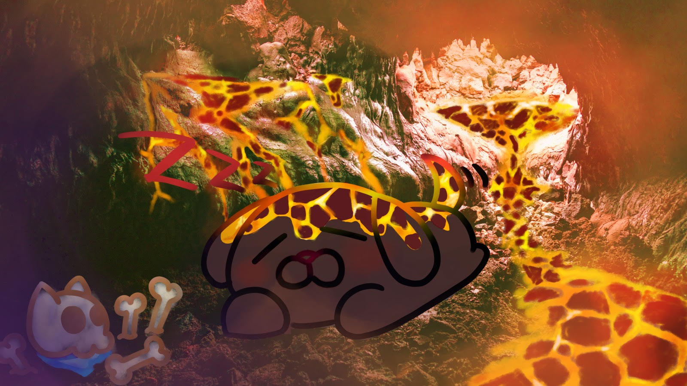

Play Again
Eaten Ending
You decided to fight fire with fire. Opting for the violent route you decide to fight the beast. The shield was not able to hole up against the beast. Amora’s Lovelock is a shield built with love, when used in hatred and violence it shatters and leaves you vulnerable. In the end, you were eaten by the beast. If only you used the Lovelock ability and did not act on violence. Maybe your ending would have been different.
Play Again